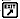
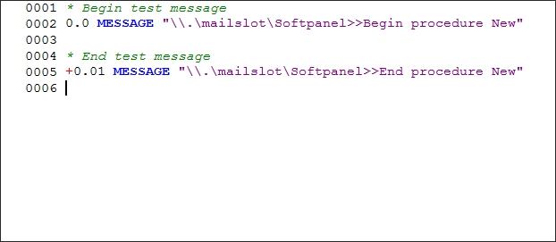
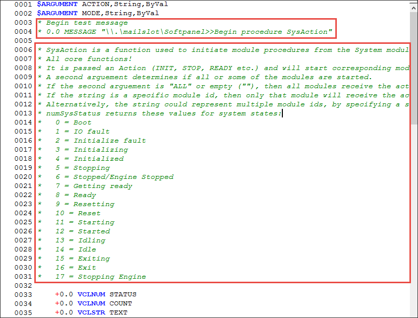
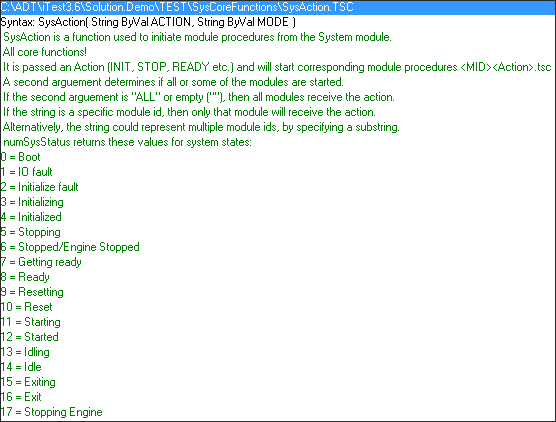

iTest User's Guide
iTest ships with a solution that includes sample files. You can use these files to become familiar with VCL, or you can edit them to use in your tests.
 |
CAUTION: | iTest uses some procedures to execute core programs and features. Before editing a procedure shipped with iTest, duplicate and rename the procedure file. |
 |
NOTE: | A new folder is created in Included mode by default. If a folder is in Excluded mode, it cannot be “included” until it contains at least one procedure. Refer to the Including or Excluding a Procedure Folder section below for more information. |
You can specify which procedures are to be built in the Console by including or excluding procedure folders.
When a folder is included, all procedures within the folder are included in the test build and the Console checks the files for errors during the build.
When a folder is excluded, all procedures within the folder are excluded from the test build and the Console does not check the files for errors during the build. Also, if a procedure folder is excluded, none of the procedures inside will be available for use (excluding a procedure does not remove it from the solution).
Right-click on the selected folder, then click either Include this Folder or Exclude this Folder.
Folders to be included in the Console test build are identified by a yellow folder icon. Folders to be excluded from the Console test build are identified by a gray slanted folder icon.
NewProcedure1 displays in the Tree Bar. |
NOTE: | The prompt to save always occurs when changes have been made. |
File types can be specified for procedures. This identifies when they are to be executed by the iTest Console. To specify a file type for a procedure, right-click the selected file and then select one of the following file types from the shortcut menu. When a file type is selected for a procedure, the associated icon displays to the left of the procedure name in the Tree Bar.
|
NOTE: | There is no warning if another procedure has been set to one of these file types previously. |
Procedure Type Descriptions
| Setting | Icon | Description |
| Startup Procedure | Indicates the procedure that runs when the Console starts. Only one Startup procedure can be selected. | |
| Soft Stop Procedure | Indicates the procedure that runs when you stop a test on the Console. Only one Soft Stop procedure can be selected. | |
| Exit Procedure |  | Indicates the procedure that runs when the user exits the Console. Only one Exit procedure can be selected. |
These settings can be viewed and modified by right-clicking the Procedures node in the Tree Bar and selecting Properties. This opens the Procedure Settings dialog.
PREEMPT or SUSPEND command to stop/pause all running procedures at or below a certain level. By default, 0 is assigned to a procedure when it is created.
Argument Options
| Option | Description |
| Name | Specify a name for the argument. |
| Type | Select the type of argument: Number or String. |
| Pass By | Select how the argument is passed to the calling function: Value arguments pass local variables whose values can be changed, but the changes are not reflected in the calling function. Only the current value of the argument is passed. No references to the channel or local variable are available. Reference arguments pass local variables. The current value of the local variable along with underlying local variable information is available inside the scope of a called function. Changes to a Reference argument are reflected in the calling function. This is equivalent to passing a pointer to a local variable. ChanName arguments pass global database channels. The current value of the global database channel along with underlying channel information is available inside the scope of a called function. Changes to a ChanName argument are reflected in the calling function. This is equivalent to passing a pointer to a global database channel. |
iTest allows multiple instances of the same procedure to be run with the EXECUTE command, the SPAWN command, or the SEQUENCE START data_engine mailslot message. This is especially useful when running a procedure simultaneously using different sets of variables.
For more information, refer to the EXECUTE command in the VCL Command List reference list.
For more information, refer to the SPAWN command in the VCL Command List reference list.
For more information, refer to the SEQUENCE START mailslot message in the DataEngine Mailslot Messages List reference list.
|
NOTE: | Use the AllowMultipleProcInstances powertek.ini setting to restrict the SPAWN command and the SEQUENCE START data_engine mailslot message to only being able to start a single instance of a procedure. Exceptions to this powertek.ini setting are listed in the iTest Advanced INI Options reference list. |
|
NOTE: | It is useful to have the Helper Bar displayed when editing procedures; items can be dragged/dropped from the Helper Bar and the Tree Bar into the Test Editor window. |
IntelliSense is a modern text editing tool that performs code completion. When you begin to type, IntelliSense displays an autocomplete popup list of commands, procedures, channels, and/or functions depending upon the context of what is being written. This feature reduces the time used to write procedures and calculations; it also prevents possible typing errors and mistakes that will prevent your procedures and calculations from executing successfully. You can enable or disable IntelliSense based on your personal preference. To do so, right-click within the editor and select the Preferences option. Select or deselect the Enable IntelliSense option as necessary.
Editor Options
The following set of rules outline the IntelliSense behaviors:
EXECUTE and SPAWN display procedures.MESSAGE does not support IntelliSense.When writing procedures, items can be dragged/dropped from the Tree Bar and Helper Bar into the Test Editor Display Area. From the Tree Bar, you can drag/drop procedures, data logs, limit groups, and control loops.
When items are dragged/dropped from the Tree Bar and Helper Bar into the Display Area, iTest inserts a template of the VCL code needed to execute the command.
Text inside angle brackets, referred to as placeholders, indicate text that should be replaced by an argument. An argument can be typed in or channels dragged/dropped from the Helper Bar to replace the placeholder.
For example, when the mailslot message PID Start is dragged/dropped to the Display Area, the following code is added to the procedure:
+0 MESSAGE "\\.\mailslot\Data_Engine>>PID Start <PID File (e.g., Speed.HS1)>"
Replace <PID File (e.g., Speed.HS1)> with the name of the PID file to start.
Field Descriptions
| Option | Description |
| Function Prototype | Read-only. Displays the syntax required to call the function, its return type, and the number of input arguments, their type, and the method by which the arguments are passed. Example: SET <Number> Function1(StringByVal ChanName) |
| Function Description | Read-only. Displays the procedure help text, if any, for the function. Procedure help is the first contiguous block of comment lines after the Begin procedure mailslot message. |
| Type | Read-only. Indicates if the value is a return value or an argument (parameter) value. |
| Description | Read-only. Displays the type of value the function returns, and, if arguments were configured, the argument name, its type (String or Number), and the method by which the argument is passed. |
Procedure Help is a Test Manager feature that communicates procedure information as a commented text block within the .tsc file. It behaves as help text and appears in the VCL Help output tab when the feature Help on procedure <procedure name> is clicked. The following section describes the proper formatting for the procedure help syntax and instructions for displaying the text.
When you add a new procedure, the file automatically generates two lines of code and two comments.
New Procedure Content

Procedure information is formatted as comments within the .tsc file. iTest considers blocks of commented text before or after the following mailslot message as the procedure's help text.
0.0 MESSAGE "\\.\mailslot\Softpanel>>Begin procedure (Procedure Name)"
You can use the commented blocks of text to document the procedure’s purpose, required inputs, any return values that may result, etc.
|
NOTE: | An empty row (no asterisk) between blocks of commented text will cause the content following the empty row to be excluded from the outputed help. |
An example of a .tsc file's mailslot message and procedure help is displayed below:
Help Procedure Content Example

The code, as written above, produces the following output in the VCL Help tab.
Procedure Help Output

You can enable a powertek.ini setting to use a default block of text. This feature places the pre-existing text in the appropriate location when you add a new procedure in Test Manager.
Setting:
ProcHeaderFile
This is the path and file name for a predefined procedure header. Use of this powertek.ini setting is only supported by Test Manager.
Syntax Example:
ProcHeaderFile=$SYSTEMDIR\MyHeader.txt
The content in the header file is assumed to be VCL compliant and will be included in the new procedure when created.
* * Description: <What the procedure is supposed to do> * * Pre Conditions: <What the procedure expects/assumes> * Arguments: * <Argument 1 Name>: <Description of argument 1> * <Argument 2 Name>: <Description of argument 2> * * Post Conditions: <What changes the procedure makes> * Return: * <Return value 1> = <Return value 1 meaning> * <Return value 2> = <Return value 2 meaning> * *
EXECUTE or SPAWN commands, and then select Help on procedure "procedurename.tsc”, where procedurename.tsc is the name of the procedure called by the code. The help text, if any, for the called procedure displays in the VCL Help tab in the output bar.A procedure hierarchy depicts a tree diagram that indicates the procedures called from within the procedure and their execution order.
|
NOTE: | Executed and spawned procedures are listed separately, so a spawned procedure may start before, after, or between any executed procedure. |